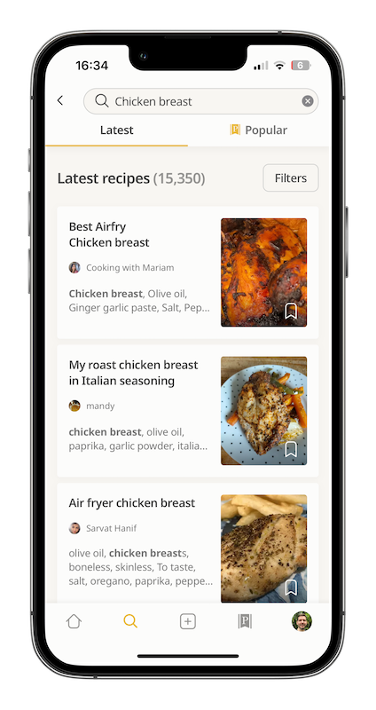
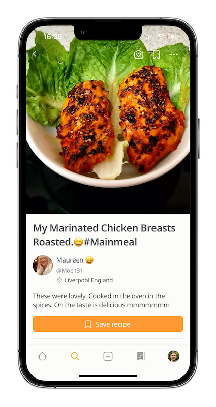
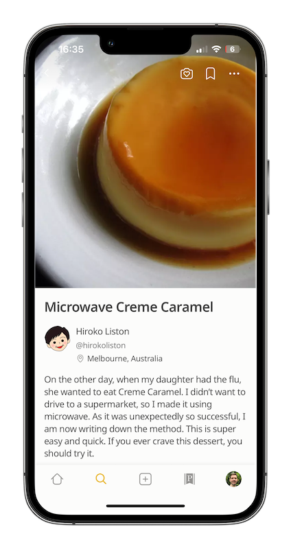

Search and discover recipes from the Cookpaad community
Through Cookpad search, you can discover recipes by ingredients or dish names, ensuring you always find something delicious.
The search experience is even better with the free Cookpad mobile app!


Save Recipes
Using the book mark icon, you can save the recipes for future use in your profile.
With the free cookpad mobile app. you can save and manage you recipes more effectively!
Share your recipes
You can capture and share your cooking experience or family reciped forever by posting them on cookpad.
Share your recipes using the free coopad mobile app!

👧Lusia

Share Cooksnaps
Through Cooksnaps, you can sahre all your successes and feedback related to a recipe you,,ve cooked from cookpad.
The kids loved it! The
dough is super light.
Thanks for sharing!
🍩🍫😋 21 ❤️ 17 👏🏻 9
👧isabella

Share Cooksnaps
Through Cooksnaps, you can sahre all your successes and feedback related to a recipe you,,ve cooked from cookpad.
Thanks for this
tradional recipe!it
super tasty! ❤️
🍩🍫😋 35 ❤️ 11 👏🏻 26